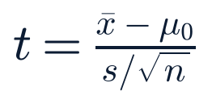

Friday, July 31, 2026 · Generated 4:35 PM ET · All times Eastern (America/New_York)
Overall confidence: Medium-HighMarkets: closed — broad, narrow-leadership risk-on session2 sources unavailable — see System health
News cutoff
2026-07-31 16:15 ET
Market data as of
2026-07-31 ~16:00 ET close
Report version
1.0
Reading time
~40 minutes
Market status
Closed — normal session, no NYSE holiday, last trading day of July
This run's own equity/index sweep was pulled ~15:55–15:57 ET and re-confirmed with a second pass; wire reports (CNBC, TheStreet) describe the same close but cite a positive Russell 2000 (+1.37%) where this run's own data shows IWM/^RUT modestly negative (−0.4%). That discrepancy is flagged, not resolved — see What Moved Markets.
Data freshness by source, this run.
Source
Freshness label
Data age
Treasury par yield curve
EOD official
Jul 30 (today's curve not yet posted as of cutoff)
CENTCOM explicitly denies Iran's claimed Kuwait strike; "no U.S. aircraft were destroyed or damaged"
Claim: overnight Jul 30–31 · CENTCOM denial: reported through the day Jul 31 · Last checked 16:15 ET
What happened
US Central Command directly rejected Iran's claims from this morning's report: CENTCOM said no US aircraft, including F-35s, were destroyed or damaged in the recent attempted Iranian strikes on Jordan's Muwaffaq Salti base or Kuwait's Ahmad al-Jaber and Ali Al Salem air bases, and that incoming missiles and drones were intercepted or failed to reach their targets.
Why it matters
This is the clearest US on-the-record rebuttal of this conflict's damage claims so far, directly addressing the specific six-F-35 figure this report carried as unconfirmed this morning.
What is confirmed
Confirmed-primary: CENTCOM's own denial statement, corroborated by multiple outlets (IranWire, Defence Security Asia, Al Jazeera). Iran's original claim remains Confirmed-primary only as to the claim's existence (via its own state media), not its substance.
What remains uncertain
Whether any lesser damage or casualties occurred that CENTCOM's blanket denial does not address; Iranian state media had not, as of this cutoff, issued a follow-up response to the US denial.
Context
Resolves forecast 2026-07-31-am-1 (60–75% that the claim would go unconfirmed within 48 hours) as CORRECT, ahead of its full horizon — an explicit denial satisfies "not confirmed" more decisively than the horizon originally contemplated.
Impact
Markets: no distinct oil or defense-sector move is attributable to the denial itself; WTI's +1.4% today tracks with Exxon/Chevron's own windfall-profit earnings commentary, not this specific statement (see Economics & Business). Security: modestly de-escalatory, but Iran's stated campaign against multiple bases continues regardless of the specific damage dispute.
What happens next
Watch for an Iranian state-media response to the denial, and for the Senate's continuing fight over war-powers authorization (see US Politics).
Related assets (exposure ≠ direction)
CL=F, LMT, RTX, NOC, LHX
Sources: CENTCOM statement via IranWire, Defence Security Asia (primary/secondary, converging) · Al Jazeera live coverage · CBS News, Tribune Express (secondary, conflict-wide context).
New to this report's coverageDisputed — implementation contested
Trump's Board of Peace announces a Hamas disarmament agreement for Gaza; Israel and Hamas each voice public skepticism over sequencing
Event: announced Thursday Jul 30 · Continued coverage through Jul 31 · Last checked 16:15 ET
What happened
President Trump announced Thursday that mediators (Egypt, Qatar, Turkey), working through his multi-nation "Board of Peace," reached an agreement for the "complete disarmament" of Hamas and other armed groups in Gaza, in phases, after which Israeli forces would withdraw. An International Stabilization Force is to work with a new Palestinian police force on security; a precise disarmament roadmap is due within 14 days, subject to extensions and approval by an international verification body.
Why it matters
This is a potentially major turn in the Gaza conflict that this report did not previously surface — it broke Thursday afternoon/evening, after this morning's 6:50 ET cutoff, and this run's research did not identify it as flagged in the prior edition. It is included now, a news-cycle late, in the interest of completeness rather than recency.
What is confirmed
Confirmed-multiple that Trump and Board of Peace officials made this announcement, via Washington Times, Al Jazeera, NPR, Axios, CNN and Jerusalem Post, all reporting the same core terms.
What remains uncertain
Whether Hamas will actually disarm on the terms described. Israeli officials are reported as "deeply skeptical" Hamas will surrender its weapons; a senior Hamas official's comments suggest the disarmament-before-withdrawal sequencing could still be contested by Hamas's own side. Neither the identity nor composition of the "International Stabilization Force" was detailed in coverage gathered this run.
Context
This sits alongside the Board of Peace's broader Gaza reconstruction framework tracked in earlier editions of this system (prior to this run's story-memory window); this report treats it as effectively new given the gap in continuous coverage.
Impact
Geopolitics: a genuine diplomatic marker regardless of implementation odds. Markets: no distinct market reaction to this specific announcement was identified in data gathered this run; defense and energy names' moves today trace to earnings and the broader Iran-conflict backdrop, not this announcement specifically.
What happens next
Watch for the 14-day disarmament-roadmap deadline (on or around Aug 13) and for on-the-record Hamas and Israeli government statements confirming or rejecting the sequencing.
Sources: Washington Times, Al Jazeera, Axios, Jerusalem Post, CNN Politics, NPR (secondary, converging on the announcement's terms) · no primary Board of Peace or Hamas document was independently retrieved this run.
Expanded analysis (collapsed by default)
This report flags its own gap here rather than quietly folding the story in as if freshly broken: a development significant enough to reach multiple front pages Thursday should have appeared in Friday morning's edition and did not. That is logged plainly rather than glossed over, consistent with this system's commitment to surfacing its own misses (see Sources & Corrections).
Resolved — cash sessionConfirmed — primary (this run's own data)
Apple slides ~7% on weak guidance despite a beat; Amazon surges ~15% as the mega-cap earnings week closes with a historic split verdict
Earnings: after Thursday's close · Cash-session reaction: today, closed 16:00 ET · Last checked 16:15 ET
What happened
Apple (AAPL) closed today's session down 7.19% (this run's data; wire reports cite −7% to −9% depending on the exact print sampled) despite beating on revenue ($109.4B, +16% YoY) and EPS ($2.02 vs. $1.88 est.) Thursday. The drop tracks to weak forward guidance: management guided next-quarter revenue growth to 9–11%, below the ~12% Street expected, and flagged rising memory-component costs (CEO Tim Cook), supply constraints on parts (CFO Kevan Parekh), a Services miss ($30.7B vs. ~$31.3B est.), and softer Greater China revenue ($18.8B vs. ~$19.5B est.). Amazon (AMZN) closed +15.46% (this run's data), extending its premarket move, on its first-ever $200B+ quarter and 37% AWS growth (see this morning's edition for full detail).
Why it matters
This closes a week in which every one of the five mega-cap reporters (MSFT, META, ARM/QCOM-adjacent chip names, AAPL, AMZN) moved sharply post-earnings on AI-capex and forward-guidance signals rather than the headline beat/miss — a "guidance, not the print, sets the reaction" pattern this report tracked all week.
What is confirmed
Confirmed-primary: both companies' own reported figures and guidance (via investor-relations releases and this run's SEC EDGAR sweep); Confirmed-multiple on today's price reaction via this run's own Yahoo Finance data plus CNBC, TheStreet, Yahoo Finance and FX Leaders wire coverage.
What remains uncertain
Whether Apple's guidance cut proves conservative (as Apple guidance sometimes has) or an accurate read on a genuine memory-cost/supply squeeze also flagged this week by Samsung and SK Hynix (see Business & Corporate).
Context
Resolves forecast 2026-07-30-pm-1 (45–55% probability either Apple or Amazon moves >5% the session after earnings) as CORRECT — both moved far beyond the 5% threshold, in opposite directions.
Impact
Markets: Apple's decline was the single largest drag on the Dow and on XLK today, while Amazon's surge was the single largest contributor to XLY's sector-leading +3.43%. Companies: Apple's memory-cost commentary is a direct read-through for the AI-infra/memory names (MU, which separately fell 5.31% today on its own dynamics — see Tech). Consumer: Amazon's results reinforce AWS/ai_infra watchlist strength (ETN +7.88%, VRT +6.69%, ANET +5.75% today).
What happens next
Watch sell-side price-target revisions on Apple over the coming days, and whether the memory-cost narrative broadens to other consumer-hardware names.
Related assets (exposure ≠ direction)
AAPL, AMZN, XLK, XLY, MU, QQQ
Sources: this run's own Yahoo Finance close data (primary) · CNBC, TheStreet, FX Leaders, SiliconANGLE, TradingKey, Eastern Herald (secondary, converging).
NewConfirmed — primary (BLS)
Employment Cost Index runs hotter than expected: compensation costs +0.9% Q/Q, complicating the Fed's wage-inflation read
Released 08:30 ET today · Last checked 16:15 ET
What happened
BLS's Q2 2026 Employment Cost Index showed civilian compensation costs +0.9% quarter-over-quarter, seasonally adjusted (wages +0.9%, benefits +1.0%), and +3.4% year-over-year (wages +3.2%, benefits +3.8%). Private-industry compensation costs rose 3.3% year-over-year (not seasonally adjusted); state/local government compensation rose 3.6%.
Why it matters
This is the Fed's preferred wage-inflation gauge, released two days after Wednesday's hawkish 9-3 hold with a historic three-way dissent, and one day after Thursday's Q2 GDP miss (1.5% vs. 2.1% prior). A 0.9% Q/Q print is well above the ~0.40% model-based estimate this report carried this morning, complicating rather than resolving the "weak growth, sticky inflation" picture.
What is confirmed
Confirmed-primary: BLS's own release (bls.gov/news.release/eci.nr0.htm).
What remains uncertain
How much of the quarter-over-quarter acceleration reflects one-off benefit-cost dynamics versus a genuine reacceleration in underlying wage growth; this report does not have the sub-component breakdown needed to distinguish the two as of this cutoff.
Context
Resolves forecast 2026-07-31-am-2 (45–55% probability of a print at or below ~0.5% Q/Q) as WRONG — the actual 0.9% print is roughly double the forecast's upper bound.
Impact
Rates: the 10-year yield pushed toward its highest levels since 2007 today (this run's data has the 20Y/30Y par yields already above 5.2% as of Thursday's curve); a hot ECI print is a plausible contributor to today's continued bond-market pressure, though this report does not assert it as the sole confirmed catalyst (see What Moved Markets). Fed: reinforces, rather than eases, the hawkish framing from Wednesday's dissent.
What happens next
Watch August's jobs report and CPI (due Aug 12) for whether this wage acceleration is corroborated elsewhere.
Sources: bls.gov/news.release/eci.nr0.htm (primary) · FRED ECIWAG series context (primary).
NewConfirmed — primary (company disclosure)
Novo Nordisk erases roughly $30B in market value as its ziltivekimab cardiovascular trial fails; shares close down ~8.6%
Disclosed this morning · Cash-session close: 16:00 ET · Last checked 16:15 ET
What happened
Novo Nordisk (NVO) said its Phase 3 ZEUS trial of ziltivekimab — an anti-inflammatory drug targeting the IL-6 pathway — showed no reduction in major adverse cardiovascular events versus placebo in patients with atherosclerotic disease, chronic kidney disease and systemic inflammation, despite hitting its intended biological targets (lower free IL-6 and hs-CRP). Shares closed down 8.63% (this run's data; wire reports cite figures from 7% to 18% depending on which intraday print and market they sampled), erasing roughly $30B in market value per Forbes.
Why it matters
This removes what analysts had considered one of Novo's most promising pipeline assets beyond its core GLP-1 (obesity/diabetes) franchise, eliminating a revenue stream investors had partially priced in.
What is confirmed
Confirmed-primary: Novo's own trial disclosure, corroborated by CNBC, Forbes, Yahoo Finance and Schaeffer's Research.
What remains uncertain
Whether Novo revises full-year guidance in response; no such revision was identified in coverage gathered this run.
Impact
Health-care watchlist: NVO is this run's largest single-name decliner in the health group by a wide margin (next-largest move: ABBV −2.17%). No broad pharma-sector contagion is evident in today's data — XLV closed only −0.43%, and REGN (+3.12%) was today's health-group leader on its own dynamics.
What happens next
Watch for analyst estimate revisions and any formal guidance update from Novo. Logged as forecast 2026-07-31-pm-1 (see Risks & Scenarios).
Related assets (exposure ≠ direction)
NVO, XLV, LLY
Sources: Novo Nordisk trial disclosure (primary, via wire) · CNBC, Forbes, Yahoo Finance, Schaeffer's Investment Research, Pharmaceutical Technology (secondary, converging on the trial result; diverging on the exact percentage decline cited).
NewConfirmed — primary (company reports, EDGAR)
ExxonMobil and Chevron post windfall Q2 profits on Iran-war-driven oil prices; Chevron income nearly quadruples year-over-year
Reported before the open, 08:00 ET · Last checked 16:15 ET
What happened
ExxonMobil reported Q2 2026 earnings of $14.5B ($3.48/share GAAP; $3.52 adjusted, an 8-cent miss vs. estimates), with upstream contributing ~$8.2B and downstream earnings surging to $4.9B on record US refining throughput. Chevron's net income soared to $12.1B, up roughly 400% from $2.5B a year earlier, with adjusted EPS of $6.06 beating estimates by $0.50; Chevron's production segment income climbed 200% to $8.2B and its refining segment jumped roughly 500% to $4.9B. Both companies explicitly attributed the surge to oil prices elevated by the US-Iran conflict.
Why it matters
This is a direct, primary-sourced example of the Iran conflict's economic spillover into US corporate earnings — a windfall for energy producers that also functions as an implicit tax on consumers and other energy-consuming sectors.
What is confirmed
Confirmed-primary: both companies' own releases; no new 8-K text was independently parsed beyond the item-code confirmation in this run's EDGAR sweep (both filed routine Item 2.02 earnings 8-Ks this morning).
What remains uncertain
How durable this windfall is if the conflict's oil-price premium fades; this report does not forecast oil prices.
Impact
Markets: XLE closed +1.11% today, among today's stronger sectors; OIH (energy services) +2.75% and XOP (E&P) +1.47% led the broader energy-industry group. WTI itself closed +1.41% today at $84.77.
What happens next
Watch whether other integrated energy majors reporting in coming weeks show the same windfall pattern.
Related assets (exposure ≠ direction)
XOM, CVX, XLE, XOP, OIH, CL=F
Sources: ExxonMobil and Chevron investor-relations releases (primary) · SEC EDGAR 8-K feed, this run (primary, filing confirmation) · CNBC, CNN Business, MarketScreener, Energy News Beat (secondary).
NewConfirmed — primary (company report)
Coinbase posts a third straight quarterly loss as revenue falls 14%; shares close down ~9.3%
Reported this week · Cash-session close: 16:00 ET · Last checked 16:15 ET
What happened
Coinbase (COIN) reported Q2 revenue of $1.22B, down 14% year-over-year, and a net loss of $359.5M — its third consecutive quarterly loss. Shares closed down 9.27% today (this run's data; wire reports cite roughly 13% intraday).
Why it matters
This is the sharpest single-name decline in this report's financials watchlist today, and stands in contrast to strong prints elsewhere in the group (Cboe +4.54% on record options-driven revenue, Apollo +4.29%).
What is confirmed
Confirmed-primary: Coinbase's own reported figures.
What remains uncertain
Whether the revenue decline reflects broader crypto-trading-volume softness or company-specific competitive pressure; this report's data does not distinguish the two, and today's crypto-market data (BTC −2.83% 24h) shows no single obvious explanatory catalyst.
Impact
Financials watchlist: COIN is this run's largest single-name decliner in that group by a wide margin. No distinct read-through to the broader crypto-asset prices was identified.
What happens next
Watch for sell-side price-target revisions; logged as forecast 2026-07-31-pm-3 (see Risks & Scenarios).
NDAA FY2027 remains blocked in the Senate as Sen. Duckworth presses her Iran-war-funding amendment
House passed Jul 22 (216-212) · Senate blockage ongoing through this week · Last checked 16:15 ET
What happened
Senate Democrats have continued blocking a motion to proceed on the $1.15 trillion National Defense Authorization Act, which the House passed Jul 22. Sen. Tammy Duckworth (D-IL), one of the "Senate Six" that has repeatedly forced War Powers Resolution votes on the Iran conflict, says she will vote no on the NDAA unless her amendment — barring authorized funds from being used for offensive operations against Iran without new congressional authorization, and withholding the Defense Secretary's travel funding pending a readiness-impact report — is included.
Why it matters
The NDAA is turning into a referendum on the Iran war's legal authorization, layered on top of a separate dispute over the bill's total size (up to $1.5T if paired with a reported $350B reconciliation request).
What is confirmed
Confirmed-multiple: the House vote, the blockage, and Duckworth's stated position, across Duckworth's own press releases and Breaking Defense, The Hill and PBS coverage.
What remains uncertain
Whether any compromise on the Duckworth amendment or the topline emerges before the Senate's August recess.
Context
First tracked in this report Jul 27-am (faded pending new developments); today's Duckworth-amendment detail is a materially more specific update than "still stalled."
Impact
Policy: direct relevance to the defense/aerospace watchlist via program authorizations (LMT, RTX, NOC, GD, BA, LHX, HII, BWXT, AVAV, KTOS, PLTR, RKLB) even though today's price moves in that group trace to earnings and sector rotation, not this legislative dispute specifically.
What happens next
Watch for a cloture vote or a negotiated amendment package before recess.
Sources: Sen. Duckworth's official press releases (primary) · Breaking Defense, The Hill, PBS NewsHour, Democracy Now (secondary, converging).
Materially changedConfirmed — multiple (UN/press)
DRC Ebola outbreak becomes the second-largest on record; case growth continues to outpace prior historic outbreaks
Data as of approx. Jul 30–31 · Last checked 16:15 ET
What happened
Case/death figures now stand at roughly 3,553 cases and 1,558 deaths, up from this morning's 3,442/1,521, and CNN reports the outbreak has become the second-largest Ebola outbreak on record, having surpassed the total case count of the 2018–2020 DRC outbreak in just over two months rather than the nearly two years that outbreak took.
Why it matters
The pace of this outbreak (driven by the Bundibugyo ebolavirus species, for which there is no WHO-approved vaccine, unlike the more common Zaire species) is now explicitly framed by outlets covering WHO/UN data as historically anomalous, not merely large.
What is confirmed
Confirmed-multiple on the case/death trajectory and the "second-largest on record" framing (CNN, citing WHO/UN data); Single-reliable-source chain on the precise day-over-day figures, consistent with this report's sourcing note in prior editions.
What remains uncertain
Whether the growth rate is beginning to slow; today's data shows continued acceleration, not deceleration.
Impact
Public health: WHO's Public Health Emergency of International Concern-level framing (carried in prior editions) is reinforced, not superseded, by today's figures.
What happens next
Watch for the next WHO situation-report update and any change in international funding response.
Saudi-led Maritime Defense Alliance takes shape: 14 named countries, Riyadh to host headquarters, 43-nation military talks held
Proposal first reported Jul 30 · Detail firmed Jul 31 · Last checked 16:15 ET
What happened
Following yesterday's report that 14 countries backed Saudi Arabia's proposed Maritime Defense Alliance, today's coverage names the supporting countries specifically: Saudi Arabia, Kuwait, Bahrain, Qatar, Pakistan, Turkey, Egypt, Jordan, Yemen, Bangladesh, Nigeria, Sudan, Djibouti and Somalia. Military representatives from 43 countries reportedly discussed the alliance's structure, command arrangements and operational framework in Riyadh, which is expected to host the alliance's headquarters.
Why it matters
This moves the proposal from a stated intent (yesterday) to a concrete membership list and an active 43-country planning process (today), a material specificity upgrade.
What is confirmed
Confirmed-primary on the Saudi defense ministry's own statements; secondary wire confirmation (UPI, Al Jazeera, Ratopati, Saudi Gazette, The Defense Post) on the named-country list and the 43-country talks.
What remains uncertain
Formal ratification timing and command structure remain undecided; several named countries have not yet completed domestic approval procedures per this coverage.
Context
Direct policy response to the widening US-Iran conflict's threat to the Strait of Hormuz and Suez Canal shipping lanes, and to ongoing Houthi Red Sea attacks.
Impact
Markets: no distinct shipping- or energy-sector move attributable to this specific development was identified in today's data.
What happens next
Watch for a formal charter or founding summit announcement.
Sources: Saudi defense ministry statements (primary) · UPI, Al Jazeera, Ratopati, Saudi Gazette, The Defense Post, IndexBox (secondary, converging).
Section 3 · the two-minute versionTwo-Minute Closing Summary
The world CENTCOM explicitly denied Iran's claimed Kuwait strike on US F-35s, the clearest US rebuttal in this conflict to date. Trump's Board of Peace announced a Hamas disarmament deal for Gaza — a major story this report did not previously surface, included today with that gap acknowledged. DRC's Ebola outbreak became the second-largest on record. Saudi Arabia's Maritime Defense Alliance firmed up with 14 named member countries.
Markets This run's own data (last print ~15:55–15:57 ET): S&P 500 +0.90%, Nasdaq Composite +1.22%, Dow +0.70%, Russell 2000 −0.46% — a narrow, mega-cap-and-earnings-driven advance rather than a broad one. Apple closed −7.19% on weak guidance despite beating estimates; Amazon closed +15.46% on its first $200B+ quarter, closing out the week's mega-cap earnings arc on a split verdict. VIX fell to 16.07 from 17.09. The 10-year yield pushed toward its highest levels since 2007 after a hot Employment Cost Index print (+0.9% Q/Q, well above the ~0.4% estimate this report carried this morning). Novo Nordisk (−8.63%) and Coinbase (−9.27%) were the session's sharpest single-name decliners on a failed trial and a third straight quarterly loss, respectively.
Central theme A week that opened with a historic hawkish Fed dissent closes with markets absorbing a genuinely mixed data and earnings picture — a hot wage-inflation print, a weak GDP print two days ago, and a split mega-cap earnings verdict (Apple down, Amazon up) — without a single, confirmable narrative tying it together.
Most important new development The Employment Cost Index's hot 0.9% Q/Q print, because it directly complicates the Fed's already-hawkish policy stance two days after Wednesday's dissent-laden hold.
Most important risk The still-unresolved US-Iran conflict, even with today's CENTCOM denial narrowing one specific claim; the underlying campaign (strikes across at least four countries this week) continues.
Most important positive development CENTCOM's explicit denial of the Kuwait F-35 claim, the clearest de-escalatory signal (on this specific claim) this report has recorded in the conflict so far.
Key unknown Whether Apple's weak guidance reflects genuine, industry-wide memory-cost pressure (also flagged this week by Samsung and SK Hynix) or company-specific conservatism.
Deserves attention today
Employment Cost Index's hot print and its effect on the long end of the Treasury curve.
Apple's post-guidance analyst reaction over the coming days.
Whether Iran's state media responds to CENTCOM's denial.
The Gaza disarmament roadmap's 14-day deadline (~Aug 13).
Section 4What Changed Since 7:30 AM
Material updateIran-Kuwait F-35 claim
This morning: unconfirmed Iranian claim, CENTCOM silent → today: CENTCOM explicitly denies any US aircraft were destroyed or damaged → resolves forecast 2026-07-31-am-1 as correct ahead of its full horizon. Current confidence: high on the denial itself.
New to coverageGaza disarmament deal
Not present in this morning's edition despite breaking Thursday → added today with the coverage gap acknowledged → a genuinely major, if implementation-uncertain, diplomatic development. Current confidence: medium on durability.
Material updateApple / Amazon earnings reaction
This morning: both beat, premarket futures modestly positive, reaction not yet known → today: Apple closed −7.19% on weak guidance, Amazon closed +15.46% → resolves forecast 2026-07-30-pm-1 as correct. Current confidence: high.
New since morningEmployment Cost Index
This morning: due 8:30 ET, not yet released, ~0.40% Q/Q model estimate carried → today: actual +0.9% Q/Q, well above that estimate → resolves forecast 2026-07-31-am-2 as wrong. Current confidence: high on the print, open on its interpretation.
New since morningNovo Nordisk trial failure
Not tracked this morning → Novo's ZEUS cardiovascular trial failed, erasing ~$30B in market value → today's sharpest single-name health-care decline. Current confidence: high.
Material updateSaudi Maritime Defense Alliance
This morning: 14 countries back the proposal, unnamed → today: countries named specifically, 43-nation planning talks held in Riyadh → materially more concrete. Current confidence: medium-high.
Section 5US Politics & Government
The NDAA/Duckworth-amendment standoff (see Top Stories) is today's dominant domestic political story. Todd Blanche's attorney general nomination remains stalled with no material change identified since this morning: Sens. Cornyn and Tillis had not, as of coverage gathered this run, reached a written-assurance deal with the Justice Department over the disputed IRS-settlement fund, and the Senate Judiciary Committee vote remains postponed heading into the August recess window. The Supreme Court's mail-ballot emergency-stay matter is unchanged: Justice Jackson's scheduling order still sets respondent states' written response due 4:00 PM ET Monday, Aug 3 (Confirmed-multiple, no new filings found this run).
The bipartisan FRONTIER Act (AI-oversight legislation) remains faded, with no committee markup or hearing activity identified since its Jul 23 introduction.
Section 6Geopolitics
The US-Iran conflict (see Top Stories) continues as the dominant geopolitical thread; today's CENTCOM denial narrows one specific damage claim without resolving the broader campaign, which this week's coverage places across strikes in Iran, Jordan, Kuwait, and a reported Egypt drone strike. The Gaza disarmament announcement (see Top Stories) is a parallel, largely separate Middle East thread this report is newly surfacing.
Russia-Ukraine: overnight reporting (Jul 31) describes continued mutual strikes — Russian attacks killed at least 9 and injured 48 across Ukraine, including 255 Shahed-type drones launched overnight; Ukraine's General Staff put Russian losses at 1,340 killed/wounded over the same period, and a Ukrainian drone strike killed one and injured eight in Russia's Volgograd region. No new development on the Poland cruise-missile incident tracked since this morning; no Article 4 request had been made as of this cutoff (forecast 2026-07-30-pm-3 remains open, horizon Aug 2).
China/Taiwan: Taiwan tracked 27 Chinese military aircraft and 11 ships today; Taiwan's Interior Ministry is separately seeking dissolution of the pro-China Chinese Unity Promotion Party over alleged Chinese-funded influence operations, and China's coast guard/maritime-safety patrols east of Taiwan continue to expand, which some analysts read as a rehearsal for a trade-isolation strategy (System inference from AEI commentary, not an official characterization).
Europe's wildfire threat, tracked since Jul 27, was not updated with new detail in coverage gathered this run beyond what this morning's edition already carried (active fires across Turkey, Spain's largest fire "technically stabilized").
Section 7Economics & Central Banks
Today's Employment Cost Index (see Top Stories) is the day's headline data point. No new Fed statement or policy action was identified since Wednesday's 9-3 hold with the historic three-way hawkish dissent.
Employment Cost Index, Q2 2026 Confirmed-primary · released 08:30 ET today
Period
Q2 2026 (quarter ended June)
Q/Q (seasonally adjusted)
+0.9% (wages +0.9%, benefits +1.0%)
Y/Y
+3.4% total comp. (wages +3.2%, benefits +3.8%)
Prior (Q1 2026)
Private-industry compensation costs +3.4% Y/Y
Surprise
Well above the ~0.40% Q/Q model-based estimate (Trading Economics) this report carried this morning — that estimate was not a polled Street consensus and is now superseded.
Read
A hotter-than-expected wage print two days after a hawkish Fed hold and one day after a weak GDP print reinforces rather than resolves the "growth is soft, inflation still sticky" tension this report has carried through the week.
Yield curve context (Treasury.gov, EOD official Jul 30, today's curve not yet posted as of this cutoff): 2s10s +45bp, 3m10y +86bp, 5s30s +83bp. This run's own Yahoo ^TNX read (Delayed, ~15:55 ET) puts the 10-year around 4.75%, roughly 7bp above Thursday's official 4.68% close — consistent with, but not independently confirmed against, wire reports describing Treasury yields at "multi-year highs" today. 10Y real yield (FRED DFII10) 2.41% (Jul 29); 10Y breakeven inflation (T10YIE) 2.27% (Jul 30); SOFR 3.65% (Jul 30). High-yield OAS (FRED BAMLH0A0HYM2) eased slightly to 2.84% (Jul 30) from 2.87% (Jul 29), a one-day pause in the mild widening trend flagged this morning.
Section 8Business & Corporate
ExxonMobil, Chevron, Novo Nordisk and Coinbase (see Top Stories) dominate today's corporate news. Cboe Global Markets reported record Q2 2026 net revenue of $731.6M (+25% Y/Y) with adjusted EPS of $3.56 (+45% Y/Y) topping estimates, driven by a 30% surge in options revenue and a 32% jump in index-options average daily volume; Cboe raised its full-year organic revenue growth guidance to the mid-to-high teens. Shares closed +4.54% today. Eaton Corporation reported record Q2 sales of $8.5B (+21% Y/Y, 14% organic), adjusted EPS of $3.15 (a Q2 record), and raised full-year organic growth guidance to a 10% midpoint (from 8%); shares closed +7.88%.
Interactive Brokers (IBKR) filed two Item 8.01 8-Ks today (per this run's SEC EDGAR sweep), coinciding with the company's announced launch of IBKR Desktop version 1.0 and an expansion of AI-tool account connectivity (including Model Context Protocol support for tools like Claude Code, Cursor and Perplexity); shares closed −2.44% despite the announcements, extending a decline that began earlier this week.
This run's SEC EDGAR sweep of watchlist companies found five new 8-K filings since this morning's cutoff beyond those already discussed: AbbVie (Item 2.02, earnings, confirming this morning's calendar entry). Nine watchlist tickers (ASML, FLY, KRMN, LUNR, NVO, SPCX, TSM, VOYG, YSS) again returned no Atom entries from EDGAR's per-ticker browse endpoint, a recurring gap tracked across multiple editions, not a same-day finding.
Section 9Tech/AI/Cyber
No update was found this run on Anthropic's AI-hacking disclosure (see this morning's edition for full detail) beyond continued press analysis; coverage gathered this run adds that OpenAI separately cut prices on its lower-cost GPT-5.6 models by up to 80% and extended free frontier-model access to roughly 100,000 researchers through 2027, and that Google and OpenAI signed an open-weight-model policy letter over the weekend that Anthropic and Amazon did not sign — Anthropic's Dario Amodei published a statement clarifying "Anthropic has never advocated for a ban on open-weights models."
ShinyHunters' extortion deadline against Ernst & Young landed today; no leak-site posting or EY statement confirming or denying a resolution was identified in coverage gathered this run as of this cutoff — consistent with this class of deadline frequently extending without a same-day resolution. No update was found on the CISA BOD 26-04 Arista VeloCloud patch-compliance reporting or on Origin Energy's unconfirmed settlement claim.
Section 10Science & Engineering
Coverage gathered this run describes a "phonon laser" that manipulates quantum-scale mechanical vibrations rather than light — extending laser-like coherent amplification into the acoustic domain (Single-reliable-source, science-press aggregation this run did not independently trace to a primary journal citation). This report treats it as a genuine but early-stage physics demonstration, not a deployable technology, pending further detail.
Section 11Space & Spaceflight
SpaceX (SPCX) closed today's session −3.69% (this run's data), the space watchlist's group laggard for a second consecutive session; GSAT (+4.11%) led the group. SPCX's post-IPO trading history (34 sessions) now sits 15.9% below its own 20-day average, still trading in the lower part of its post-debut range ahead of its confirmed Aug 4 earnings report and Aug 6 share-lockup expiration — both now one trading week away.
No update was found this run on the heat-shield critique from former NASA researchers tracked earlier this week, on the NROL-95 mission identified yesterday, or on NASA's Nancy Grace Roman Space Telescope (still targeting an Aug 30 launch) beyond what this morning's edition already carried.
Section 12Completed Calendar
All times ET. Results as confirmed this run; importance per SPEC §17.
Time
Event
Result
08:00
ExxonMobil (XOM) earnings
Adj. EPS $3.52 (missed $3.60 est. by 8¢); $14.7B adjusted earnings — Confirmed
08:00
Chevron (CVX) earnings
Adj. EPS $6.06 (beat $5.56 est. by 50¢); net income $12.1B — Confirmed
08:00
AbbVie (ABBV) earnings
Confirmed-primary filing (8-K); figures not independently parsed this run
08:30
Employment Cost Index, Q2 2026
+0.9% Q/Q, +3.4% Y/Y — hotter than the ~0.4% model estimate — Confirmed
All day
ShinyHunters extortion deadline vs. EY
No leak-site posting or EY statement identified as of cutoff — Unresolved
Ongoing
Iran-Kuwait strike claim
CENTCOM explicitly denied — Resolved (denial)
Nothing on today's calendar was delayed or canceled per coverage gathered this run. Overnight/tomorrow items: see Overnight & Tomorrow Watch.
Section 13What Moved Markets
Open/morning: futures pointed higher pre-open (this morning's ES +0.5%, NQ +1.2%) on Amazon's and Apple's after-hours beats; the Employment Cost Index's hot print at 8:30 ET was a Likely contributor to early Treasury-market pressure. Midday/close: Amazon's rally and a handful of earnings-driven movers (Eaton, Cboe) offset Apple's slide and continued softness in materials/gold-miner names (GDX −3.35%, GDXJ −3.60%); Treasury yields extended higher through the session, a Likely contributor given the hot wage data, though this report does not assert it as the sole confirmed catalyst given Exxon/Chevron's own oil-driven commentary and the broader multi-week yield uptrend already in place. Novo Nordisk's and Coinbase's declines are Confirmed catalyst for their own single-name moves (trial failure; earnings miss) but show no evidence of broader sector contagion in today's data.
This run's own index closes (Delayed, non-consolidated Yahoo feed, last print ~15:55–15:57 ET): S&P 500 (^GSPC) 7,504.53 (+0.90%), Dow (^DJI) 52,572.34 (+0.70%), Nasdaq Composite (^IXIC) 25,428.37 (+1.22%), Russell 2000 (^RUT) 2,932.56 (−0.46%). Wire reports (CNBC, TheStreet) describe a similar S&P/Dow move but cite the Russell 2000 up 1.37% — the opposite sign from this run's own IWM/^RUT data. This report cannot reconcile that discrepancy from data gathered this run (possible causes include non-consolidated single-venue quote variance or a later intraday reversal after this run's final pull) and flags it as an open item rather than picking a number, consistent with SR §4's disagreement-handling rule.
Leadership was narrow: XLY (Consumer Discretionary, +3.43%) led on Amazon's move; XLC (+1.52%), XLE (+1.11%, on the Exxon/Chevron windfall) and XLI (+1.03%) also advanced. XLB (Materials, −2.35%) lagged on broad gold-miner weakness (GDX −3.35%); XLU, XLV, XLP and XLRE were all modestly negative — a defensive-sector laggard pattern consistent with a risk-on, not risk-off, session.
Section 14Winners & Losers
This run's own Yahoo Finance close data, watchlist names only · Delayed, non-consolidated feed, last print ~15:55–15:57 ET.
Winners
Day
Losers
Day
AMZN
+15.46%
COIN
−9.27%
GOOGL
+6.91%
NVO
−8.63%
ETN
+7.88%
AAPL
−7.19%
VRT
+6.69%
MU
−5.31%
ANET
+5.75%
GDXJ
−3.60%
CBOE
+4.54%
GDX
−3.35%
APO
+4.29%
CMG
−3.32%
GSAT
+4.11%
ESPO
−3.14%
ARES
+3.44%
SPCX
−3.69%
REGN
+3.12%
YSS
−2.82%
Amazon's +15.46% and Apple's −7.19% together produced the day's clearest "same week, opposite verdict" pair. Materials/gold-miner names (GDX, GDXJ) were the session's broadest sector-level laggard group, alongside a resumption of dollar-adjacent softness in gold itself despite gold's own modest +0.27% close.
Section 15Overnight & Tomorrow Watch
Markets are closed Saturday and Sunday; this system's next report is Saturday's Weekly Intelligence Review (9:00 AM ET). Scheduled overnight: a SpaceX Falcon 9 Starlink Group 17-52 launch from Vandenberg SFB (Confirmed-primary, Launch Library 2). No US economic releases are scheduled for the weekend; the next major release is CPI on Aug 12.
Watch items carrying into the weekend: whether Iranian state media responds to CENTCOM's denial; whether ShinyHunters follows through on its EY leak-site threat; the Gaza disarmament roadmap's 14-day deadline window (~Aug 13); and any Monday follow-through in Apple's or Novo Nordisk's shares as analysts publish post-earnings/post-trial notes over the weekend.
Section 16 · learningPhysics Lesson
Physics 5/71 · Scalars
This morning introduced the scalar/vector distinction: a scalar carries only magnitude (mass, temperature, speed), while a vector carries magnitude and direction (velocity, force, displacement). The key operating rule: scalar arithmetic is ordinary addition and subtraction (2 kg + 3 kg = 5 kg, always), while vector arithmetic requires accounting for direction — two forces of equal magnitude pointing in opposite directions sum to zero net force, not double the magnitude. That difference is why physics problems introduce vectors with diagrams (arrows) rather than bare numbers.
A concrete tie-in: when this report quotes SPY's or the S&P 500's percentage move today (+0.90%), that figure is a scalar — it has a size and a sign, but not a direction in the physics sense. Contrast that with a wind-speed reading used in this system's wildfire coverage: "15 mph from the northwest" is a genuine vector, because the direction independently matters for what happens next (which way a fire spreads). A common misconception: treating any signed number as automatically a vector. A plus or minus sign on a one-dimensional scale is not the same as a direction defined in two or three dimensions — that is what makes something a true vector rather than just a signed scalar.
Section 17 · learningSpaceflight Lesson
Spaceflight 5/75 · Specific Impulse
This morning introduced specific impulse (Isp) as rocketry's fuel-efficiency measure — thrust produced per unit weight of propellant burned per second, in seconds. The key relationship: thrust = mass flow rate × effective exhaust velocity, and Isp is that exhaust velocity re-expressed in seconds. A chemical engine's typical 300–450 second range reflects the energy density of chemical propellants; an ion engine's Isp in the thousands of seconds reflects a completely different trade — far less thrust, but far more efficient use of propellant mass, which matters enormously for a spacecraft that has to carry every kilogram of fuel it will ever use.
Real-world tie-in: SpaceX's Raptor engines, relevant to ongoing Starship coverage this report has carried, target a balance point rather than a pure Isp maximum — a methane/oxygen full-flow staged-combustion design that trades some theoretical Isp (versus, say, a hydrogen-fueled engine) for higher propellant density, easier reusability, and simpler ground operations. A common misconception: assuming higher Isp always means a "better" engine. In practice, the right Isp depends entirely on the mission — a crewed Mars mission cares about total propellant mass and thus favors Isp; a lunar lander cares more about thrust-to-weight for a controlled landing, and will accept a lower Isp to get it.
Section 18 · learningQuant/ML Lesson
Quant/ML 5/118 · t-Statistic for Testing a Population Mean
This morning introduced the t-statistic: t = (x̄ − μ0) / (s / √n) — the sample mean minus a hypothesized baseline, divided by the standard error. The larger |t| is, the less likely the observed gap from the baseline is pure noise.

Equation 5 of 118 — embedded from site/equations/ (registry order).
Today's actual market data gives a clean, real-world illustration of why the denominator matters as much as the numerator. Apple's −7.19% and Amazon's +15.46% are each large in isolation, but a t-test asks a narrower question: is a return of that size unusual relative to that stock's own typical day-to-day noise (its s, standard deviation)? A stock that normally swings 4–5% a day would produce a much smaller |t| for a 7% move than a stock that normally swings only 1–2%; this is exactly why quant desks standardize returns by volatility (a "z-score" of the move) rather than comparing raw percentage changes across different names. The misconception flagged this morning — that statistical significance implies economic significance — applies directly here too: a statistically unusual 0.3% move in a normally dead-quiet Treasury-bill fund (this run's SGOV closed +0.02%, BIL +0.04%) could in principle produce a large |t| relative to that fund's tiny typical variance, yet be economically trivial next to Amazon's 15%-plus move in a name that itself moves several percent on an ordinary earnings day.
Section 19 · collapsed by defaultFull Closing Market Analysis
Open the full market & economic analysisMarket regime
Risk-on, narrow leadership Supporting evidence: S&P 500 and Nasdaq both closed higher; VIX fell to 16.07 from 17.09; credit funds were broadly flat-to-firm (HYG −0.01%, JNK +0.03%, BKLN +0.07%); high-yield OAS eased slightly (2.87%→2.84%). Contradicting evidence: Russell 2000/IWM closed negative in this run's own data (a small-cap divergence from the mega-cap-led headline indices, and itself in tension with wire reports claiming a positive Russell close); equal-weight vs. cap-weight was mixed (RSP −0.04% vs. SPY +0.87%, a modest but real gap given Amazon's outsized single-stock contribution); gold miners (GDX −3.35%) and several defensive sectors (XLU, XLV, XLP, XLRE) were all negative; the 10-year yield pushed toward multi-year highs on a hot ECI print. Change vs. this morning: little changed in framing (already "risk-on, earnings-driven" this morning), but today's leadership is visibly narrower — concentrated in Amazon, energy earnings winners, and a handful of AI-infra names — than Thursday's broader ~62%-advancing-name session.
Broad US equities
EOD official (post-16:00 ET), 2026-07-31 · source: this run's Yahoo Finance sweep.
SPY/QQQ/IWM/DIA/TLT/SPCX technical levels from this run's 1-year Yahoo time-series pull: SPY 52-week range $621.72–$759.57; QQQ $553.88–$746.16; IWM $214.92–$300.45; DIA $435.72–$530.09; TLT $82.13–$92.06 (TLT closed essentially at its own 52-week low today); SPCX (34 sessions of history) $108.39–$211.39, still 15.9% below its own 20-DMA.
Breadth
Session 2026-07-30 · EOD official · source: Massive grouped-daily aggregation (not re-run this session; today's session posts tomorrow morning per SR §2.8).
Metric
Value
Advancers / Decliners / Unchanged
3,191 / 1,938 / 221
Screened universe
5,350 names
Up-volume / Down-volume
$10.59B / $5.30B
% above 50-DMA / 200-DMA
Estimated — EMA proxy, accumulating history (5/200 sessions)
Today's own-session breadth (advancers/decliners for Jul 31) is not yet available — the whole-market grouped-daily source posts after this run's cutoff and is captured by tomorrow morning's routine per this system's once-per-session rule. RSP's roughly flat close (−0.04%) versus SPY's +0.87% is this run's best available breadth proxy for today specifically, and points to narrower participation than Thursday's session shown above.
Sectors
EOD official (post-16:00 ET), 2026-07-31 · SPDR sector funds, this run's Yahoo sweep.
Sector
Close
Day
XLY (Cons. Disc.)
116.24
+3.43%
XLC (Comm. Svcs)
108.21
+1.52%
XLE (Energy)
59.62
+1.11%
XLI (Industrials)
180.23
+1.03%
XLK (Tech)
175.81
+0.05%
XLF (Financials)
57.03
+0.05%
XLRE (Real Estate)
45.11
−0.42%
XLV (Health Care)
162.82
−0.43%
XLP (Cons. Staples)
85.07
−0.46%
XLU (Utilities)
44.42
−0.54%
XLB (Materials)
50.42
−2.35%
Consumer Discretionary's +3.43% is almost entirely an Amazon effect (see Winners & Losers); Tech's essentially flat +0.05% masks a wide internal split (Apple −7.19%, Nvidia +3.23%, Micron −5.31%). Materials' −2.35% is this session's clearest sector laggard, driven by gold-miner weakness (GDX −3.35%, GDXJ −3.60%) even as spot gold itself closed marginally positive.
Industries & watchlists
EOD official (post-16:00 ET), 2026-07-31 · standout names by group, this run's Yahoo sweep.
Group
Leader
Laggard
Mega-cap tech
AMZN +15.46%
AAPL −7.19%
AI infrastructure
ETN +7.88%, VRT +6.69%
MU −5.31%, EQIX −2.89%
Defense & aerospace
LHX +2.60%, AVAV +2.50%
SPCX −3.69%, BA −1.97%
Space
GSAT +4.11%
SPCX −3.69%, YSS −2.82%
Financials
CBOE +4.54%, APO +4.29%
COIN −9.27%, IBKR −2.44%
Health care
REGN +3.12%
NVO −8.63%, ABBV −2.17%
Consumer
AMZN +15.46%
CMG −3.32%, UAL −1.37%
Industry sub-groups (SPEC §22): semis/AI-infra funds were broadly positive (CIBR +2.07%, SOXX +0.53%); health-care biotech (XBI −2.87%) and housing (ITB −1.12%) lagged; energy-services funds (OIH +2.75%, XOP +1.47%) led on the Exxon/Chevron windfall theme; materials funds (GDX −3.35%, MOO −2.00%) were broadly weak.
Rates & curve
Treasury.gov daily par yield curve, 2026-07-30 · EOD official (today's curve not yet posted as of cutoff).
Tenor
Yield
1M
3.79%
3M
3.84%
6M
3.98%
1Y
4.04%
2Y
4.23%
5Y
4.38%
10Y
4.68%
20Y
5.22%
30Y
5.21%
2s10s +45bp · 3m10y +86bp · 5s30s +83bp (all Jul 30). This run's own Yahoo ^TNX read (Delayed, ~15:55 ET) shows the 10-year around 4.75%, roughly 7bp above Thursday's official close — directionally consistent with wire reports of yields at multi-year highs today, but not independently confirmed against an official EOD print for Jul 31 (not yet posted as of this cutoff). 10Y real yield (DFII10) 2.41% (Jul 29); 10Y breakeven (T10YIE) 2.27% (Jul 30); SOFR 3.65% (Jul 30).
Credit
EOD official (post-16:00 ET), 2026-07-31 · this run's Yahoo sweep; OAS from FRED, EOD official Jul 30.
Fund/Metric
Value
Day/Change
LQD (IG)
106.18
−0.22%
VCIT (IG)
81.22
−0.19%
HYG (HY)
79.46
−0.01%
JNK (HY)
95.68
+0.03%
BKLN (loans)
20.40
+0.07%
SRLN (loans)
40.40
+0.04%
HY OAS (ICE BofA)
2.84% (Jul 30)
−3bp vs Jul 29's 2.87%
Credit was essentially flat today — investment-grade funds dipped slightly with rates, high-yield and loan funds were roughly unchanged to modestly positive, and the OAS spread itself eased 3bp. Credit is not confirming the equity-market's rates-pressure narrative one way or the other today; a genuinely quiet session for this asset class.
Volatility & options
Cboe, Delayed +15m, last print ~15:39 ET 2026-07-31.
Index
Close
Prior close
VIX9D
13.33
14.85
VIX
16.07
17.09
VIX3M
18.99
19.50
VIX9D < VIX < VIX3M — normal contango, and the whole complex moved lower today, consistent with a market pricing continued near-term calm after Wednesday's FOMC-day spike. Put/call ratios: Source unavailable (Cboe's options market-statistics path returned HTTP 403 again this run, the same recurring known issue). MOVE index: no allowlisted free source. Dealer gamma: not tracked, no legitimate free source.
FX
ECB reference rates via Frankfurter · Cached (as of 2026-07-30) — today's fix unavailable, origin returned HTTP 522 after 3 retries.
Pair (per USD)
Rate
EUR
0.8714
JPY
162.94
GBP
0.7469
CNY
6.7551
CHF
0.8125
CAD
1.4046
AUD
1.4325
MXN
17.4001
BRL
5.1006
INR
95.69
DXY has no allowlisted free source. EUR/USD (Yahoo, Delayed) closed 1.154, +0.63% — a modestly weaker dollar today despite the yield rise, a mild cross-asset divergence worth noting without an asserted cause.
Commodities
Front-month futures, EOD official (post-16:00 ET), 2026-07-31.
Commodity
Price
Change
WTI crude (CL)
$84.77
+1.41%
Gold (GC)
$4,111.30
+0.27%
Natural gas (NG)
$2.756
−0.07%
Copper (HG)
$6.538
+1.46%
WTI's +1.41% is a Likely contributor read-through from Exxon/Chevron's own oil-price commentary (see Business & Corporate), not independently confirmed as the sole cause. Gold's modest +0.27% sits awkwardly next to today's yield rise and dollar weakness pulling in different directions — noted, not resolved.
Crypto
As of ~15:55 ET · Live (CoinGecko aggregate, no API key required).
Asset
Price
24h
BTC
$62,944
−2.83%
ETH
$1,866.24
−2.93%
SOL
$73.09
−1.97%
ADA
$0.1705
−1.33%
Crypto's broad decline today (all four majors negative) diverges from equities' risk-on tone — the same cross-asset divergence this report flagged this morning, now continuing rather than reversing. No single confirmed catalyst identified; Coinbase's own earnings miss (see Top Stories) is a plausible sentiment drag on crypto-adjacent equities specifically, not asserted as a cause of the underlying token price moves.
Factors
EOD official (post-16:00 ET), 2026-07-31 · this run's Yahoo sweep.
Factor fund
Day
VUG (Growth)
+1.28%
IWF (Growth)
+0.99%
MTUM (Momentum)
+0.77%
IWD (Value)
+0.61%
QUAL (Quality)
+0.32%
PKW (Buyback)
+0.24%
SCHD (Dividend)
+0.22%
USMV (Min vol)
+0.19%
VYM (Dividend)
+0.14%
AVUV (Small value)
+0.15%
RSP (Equal-weight)
−0.04%
VTV (Value)
−0.09%
SPLV (Low vol)
−0.10%
IWN (Small value)
−0.25%
SPHQ (Quality)
−0.31%
Growth's outperformance (VUG +1.28%, IWF +0.99%) over value (VTV −0.09%) tracks with Amazon's and the AI-infra names' outsized contribution today. SPHQ returned usable data this run, resolving the gap flagged in prior editions.
International
EOD official (post-16:00 ET), 2026-07-31 · this run's Yahoo sweep; standouts only.
Fund
Day
EWT (Taiwan)
+2.72%
KWEB (China internet)
+1.41%
VWO (EM broad)
+1.01%
EEM (EM broad)
+0.86%
EWY (South Korea)
−2.50%
VNM (Vietnam)
−2.13%
EWA (Australia)
−1.51%
South Korea (EWY) gave back a large part of Thursday's +11.8% surge, a sharp reversal consistent with profit-taking after that outsized single-session move rather than a new negative catalyst identified this run. Taiwan's continued strength (EWT +2.72%, following Thursday's +5.13%) contrasts with Korea's reversal within the same regional chip-rebound theme. FM (Frontier Markets) returned no data again this run, the same recurring gap.
Cross-asset summary
Equities and credit both point modestly risk-on; volatility fell; but rates pushed higher (a genuine tension with a "risk-on" read, since rising yields on a hot wage print are not typically an unambiguous risk-on signal), the dollar was modestly weaker even as yields rose (an unusual pairing), gold was flat-to-firm despite both a weaker dollar and higher yields pulling in opposite directions on it, and crypto continued a broad decline diverging from equities. This is a session with more genuine cross-asset tension than a single "regime" label captures cleanly; today's read is offered with that caveat rather than forcing a tidier narrative.
Earnings
Reported today: ExxonMobil (miss on adjusted EPS, windfall profit), Chevron (beat), AbbVie (8-K confirmed, figures not parsed), Cboe Global Markets (beat, record revenue), Eaton (beat, raised guidance), Coinbase (miss, third straight loss) — see Top Stories and Business & Corporate for detail. Upcoming: SpaceX (SPCX) confirmed to report Aug 4, two days ahead of its Aug 6 share-lockup expiration.
Auctions & liquidity
Upcoming Treasury bill auctions per TreasuryDirect (unchanged since this morning): 13-Week and 26-Week bills auction Aug 3 (issue Aug 6); 52-Week and 6-Week bills auction Aug 4 (issue Aug 6). SOFR held at 3.65% (Jul 30). Dealer gamma: not tracked, no legitimate free source (repeated from Volatility section per SR §16).
Section 20Sources, Methodology & Corrections
Primary sources this run:
CENTCOM statement (via wire); ExxonMobil, Chevron, Cboe Global Markets, Eaton, Coinbase, Novo Nordisk investor-relations releases/disclosures; SEC EDGAR 8-K feed (fetched this run, UA-labeled, throttled ≤5–10 req/s)
BLS Employment Cost Index news release; Treasury.gov daily par yield curve XML; FRED series (CPIAUCSL, CPILFESL, PAYEMS, ICSA, UNRATE, T10Y2Y, DGS2, DGS10, T10YIE, DFII10, SOFR, BAMLH0A0HYM2)
Saudi defense ministry statements; Sen. Duckworth's official press releases; Trump/Board of Peace announcement via multiple wire outlets
Secondary confirmation:
CNBC, TheStreet, CNN, Al Jazeera, Forbes, TechCrunch, NPR, Axios, Washington Times, Jerusalem Post, IranWire, Defence Security Asia, Kyiv Independent, Breaking Defense, The Hill, PBS NewsHour, BleepingComputer, and other outlets as cited inline per story
Methodology note: free-tier equity quotes are non-consolidated single-venue prices and can differ slightly from official consolidated closes; this run's own index-level closes for the S&P 500, Dow and Nasdaq are directionally consistent with wire reports, but this run's Russell 2000/IWM data disagrees in sign with wire reports on that one index — both figures are presented rather than silently reconciled (see What Moved Markets). The Employment Cost Index figures in this report are BLS's own seasonally-adjusted headline numbers; this report does not independently decompose the wage vs. benefit contribution beyond what BLS itself publishes. Today's official Treasury par yield curve and whole-market breadth for the Jul 31 session were not yet posted as of this report's cutoff and are carried forward from Jul 30 with that explicitly labeled.
Prompt-injection check: no instruction-like content directed at this system was found embedded in any fetched article, filing, or API payload this run.
Corrections: none discovered in this system's own prior published reports this run. This edition does, however, flag its own coverage gap on the Gaza disarmament announcement (see Top Stories) — a Thursday-breaking story this report should have carried in this morning's edition and did not; that gap is disclosed here rather than silently backfilled as if newly broken, and is logged to ledgers/corrections.json as a coverage omission rather than a factual error. Two prior corrections remain on record in ledgers/corrections.json (2026-07-27: FOMC chair attribution; 2026-07-28: US-Iran pause day-count), both already surfaced in their respective editions.